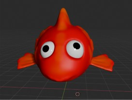
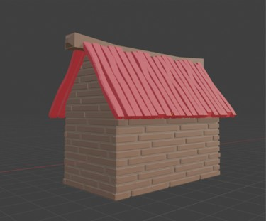
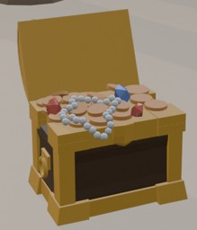

For approximately six months, I worked with Blender to learn how to independently create 3D models and environments for games.
I started with simple models and tutorials before gradually becoming more independent. I learned techniques such as Extrude, Loop Cuts, Bevel, Sculpting, Lighting, and Rendering.
For my final project, I created a small tropical island from scratch. I made several assets myself, including a palm tree, treasure chest, surfboard, wooden platform, rocks, bushes, a roof, and a seagull.
Finally, I exported the scene to Unity. This taught me how to prepare game ready assets and solve problems with object names, origins, and Blender effects that did not transfer correctly.
The biggest development was my independence. I started by relying heavily on tutorials, but i learned to choose the right tools and create models based on my own ideas.
After six months, I had built a strong foundation in Blender and learned how to create and prepare my own 3D assets for Game Development.


